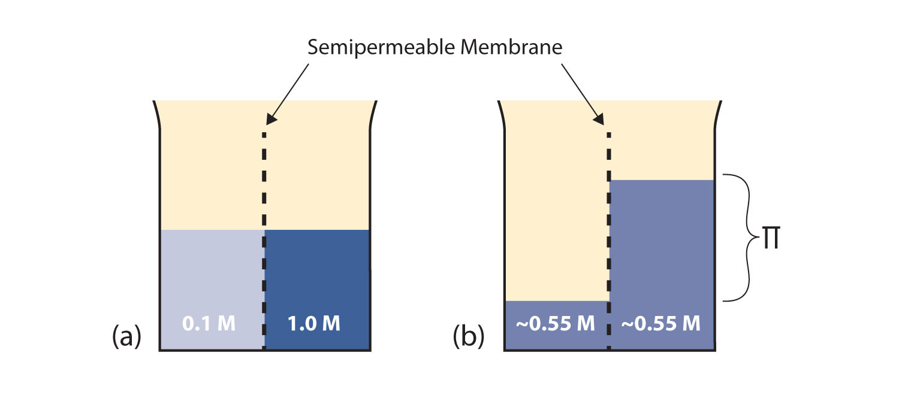
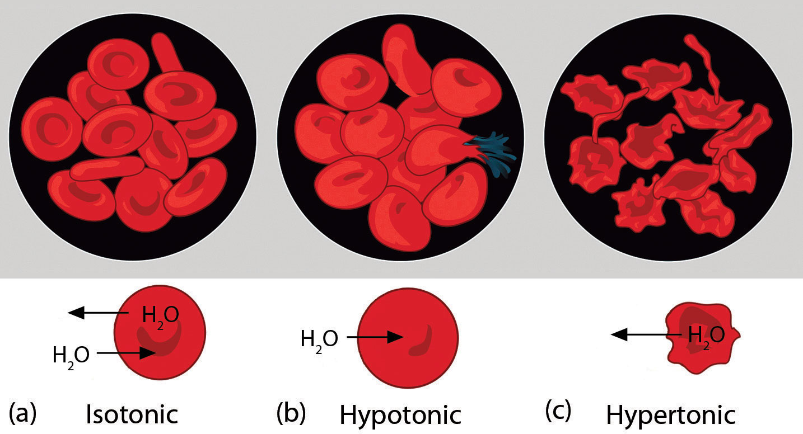

The properties of solutions are very similar to the properties of their respective pure solvents. This makes sense because the majority of the solution is the solvent. However, some of the properties of solutions differ from pure solvents in measurable and predictable ways. The differences are proportional to the fraction that the solute particles occupy in the solution. These properties are called colligative propertiesA property of solutions related to the fraction that the solute particles occupy in the solution, not their identity.; the word colligative comes from the Greek word meaning “related to the number,” implying that these properties are related to the number of solute particles, not their identities.
Before we introduce the first colligative property, we need to introduce a new concentration unit. The mole fractionThe ratio of the number of moles of a component to the total number of moles in a system. of the ith component in a solution, χi, is the number of moles of that component divided by the total number of moles in the sample:
(χ is the lowercase Greek letter chi.) The mole fraction is always a number between 0 and 1 (inclusive) and has no units; it is just a number.
A solution is made by mixing 12.0 g of C10H8 in 45.0 g of C6H6. What is the mole fraction of C10H8 in the solution?
Solution
We need to determine the number of moles of each substance, add them together to get the total number of moles, and then divide to determine the mole fraction of C10H8. The number of moles of C10H8 is as follows:
The number of moles of C6H6 is as follows:
The total number of moles is
0.0936 mol + 0.576 mol = 0.670 molNow we can calculate the mole fraction of C10H8:
The mole fraction is a number between 0 and 1 and is unitless.
Test Yourself
A solution is made by mixing 33.8 g of CH3OH in 50.0 g of H2O. What is the mole fraction of CH3OH in the solution?
Answer
0.275
A useful thing to note is that the sum of the mole fractions of all substances in a mixture equals 1. Thus the mole fraction of C6H6 in Example 15 could be calculated by evaluating the definition of mole fraction a second time, or—because there are only two substances in this particular mixture—we can subtract the mole fraction of the C10H8 from 1 to get the mole fraction of C6H6.
Now that this new concentration unit has been introduced, the first colligative property can be considered. As was mentioned in Chapter 10 "Solids and Liquids", all pure liquids have a characteristic vapor pressure in equilibrium with the liquid phase, the partial pressure of which is dependent on temperature. Solutions, however, have a lower vapor pressure than the pure solvent has, and the amount of lowering is dependent on the fraction of solute particles, as long as the solute itself does not have a significant vapor pressure (the term nonvolatile is used to describe such solutes). This colligative property is called vapor pressure depressionThe decrease of a solution’s vapor pressure because of the presence of a solute. (or lowering). The actual vapor pressure of the solution can be calculated as follows:
where Psoln is the vapor pressure of the solution, χsolv is the mole fraction of the solvent particles, and is the vapor pressure of the pure solvent at that temperature (which is data that must be provided). This equation is known as Raoult’s lawThe mathematical formula for calculating the vapor pressure of a solution. (the approximate pronunciation is rah-OOLT). Vapor pressure depression is rationalized by presuming that solute particles take positions at the surface in place of solvent particles, so not as many solvent particles can evaporate.
A solution is made by mixing 12.0 g of C10H8 in 45.0 g of C6H6. If the vapor pressure of pure C6H6 is 95.3 torr, what is the vapor pressure of the solution?
Solution
This is the same solution that was in Example 15, but here we need the mole fraction of C6H6. The number of moles of C10H8 is as follows:
The number of moles of C6H6 is as follows:
So the total number of moles is
0.0936 mol + 0.576 mol = 0.670 molNow we can calculate the mole fraction of C6H6:
(The mole fraction of C10H8 calculated in Example 15 plus the mole fraction of C6H6 equals 1, which is mathematically required by the definition of mole fraction.) Now we can use Raoult’s law to determine the vapor pressure in equilibrium with the solution:
Psoln = (0.860)(95.3 torr) = 82.0 torrThe solution has a lower vapor pressure than the pure solvent.
Test Yourself
A solution is made by mixing 33.8 g of C6H12O6 in 50.0 g of H2O. If the vapor pressure of pure water is 25.7 torr, what is the vapor pressure of the solution?
Answer
24.1 torr
Two colligative properties are related to solution concentration as expressed in molality. As a review, recall the definition of molality:
Because the vapor pressure of a solution with a nonvolatile solute is depressed compared to that of the pure solvent, it requires a higher temperature for the solution’s vapor pressure to reach 1.00 atm (760 torr). Recall that this is the definition of the normal boiling point: the temperature at which the vapor pressure of the liquid equals 1.00 atm. As such, the normal boiling point of the solution is higher than that of the pure solvent. This property is called boiling point elevationThe increase of a solution’s boiling point because of the presence of solute..
The change in boiling point (ΔTb) is easily calculated:
ΔTb = mKbwhere m is the molality of the solution and Kb is called the boiling point elevation constantThe constant that relates the molality concentration of a solution and its boiling point change., which is a characteristic of the solvent. Several boiling point elevation constants (as well as boiling point temperatures) are listed in Table 11.3 "Boiling Point Data for Various Liquids".
Table 11.3 Boiling Point Data for Various Liquids
| Liquid | Boiling Point (°C) | Kb (°C/m) |
|---|---|---|
| HC2H3O2 | 117.90 | 3.07 |
| C6H6 | 80.10 | 2.53 |
| CCl4 | 76.8 | 4.95 |
| H2O | 100.00 | 0.512 |
Remember that what is initially calculated is the change in boiling point temperature, not the new boiling point temperature. Once the change in boiling point temperature is calculated, it must be added to the boiling point of the pure solvent—because boiling points are always elevated—to get the boiling point of the solution.
What is the boiling point of a 2.50 m solution of C6H4Cl2 in CCl4? Assume that C6H4Cl2 is not volatile.
Solution
Using the equation for the boiling point elevation,
ΔTb = (2.50 m)(4.95°C/m) = 12.4°CNote how the molality units have canceled. However, we are not finished. We have calculated the change in the boiling point temperature, not the final boiling point temperature. If the boiling point goes up by 12.4°C, we need to add this to the normal boiling point of CCl4 to get the new boiling point of the solution:
TBP = 76.8°C + 12.4°C = 89.2°CThe boiling point of the solution is predicted to be 89.2°C.
Test Yourself
What is the boiling point of a 6.95 m solution of C12H22O11 in H2O?
Answer
103.6°C
The boiling point of a solution is higher than the boiling point of the pure solvent, but the opposite occurs with the freezing point. The freezing point of a solution is lower than the freezing point of the pure solvent. Think of this by assuming that solute particles interfere with solvent particles coming together to make a solid, so it takes a lower temperature to get the solvent particles to solidify. This is called freezing point depressionThe decrease of a solution’s freezing point because of the presence of solute..
The equation to calculate the change in the freezing point for a solution is similar to the equation for the boiling point elevation:
ΔTf = mKfwhere m is the molality of the solution and Kf is called the freezing point depression constantThe constant that relates the molality concentration of a solution and its freezing point change., which is also a characteristic of the solvent. Several freezing point depression constants (as well as freezing point temperatures) are listed in Table 11.4 "Freezing Point Data for Various Liquids".
Table 11.4 Freezing Point Data for Various Liquids
| Liquid | Freezing Point (°C) | Kf (°C/m) |
|---|---|---|
| HC2H3O2 | 16.60 | 3.90 |
| C6H6 | 5.51 | 4.90 |
| C6H12 | 6.4 | 20.2 |
| C10H8 | 80.2 | 6.8 |
| H2O | 0.00 | 1.86 |
Remember that this equation calculates the change in the freezing point, not the new freezing point. What is calculated needs to be subtracted from the normal freezing point of the solvent because freezing points always go down.
What is the freezing point of a 1.77 m solution of CBr4 in C6H6?
Solution
We use the equation to calculate the change in the freezing point and then subtract this number from the normal freezing point of C6H6 to get the freezing point of the solution:
ΔTf = (1.77 m)(4.90°C/m) = 8.67°CNow we subtract this number from the normal freezing point of C6H6, which is 5.51°C:
5.51 − 8.67 = −3.16°CThe freezing point of the solution is −3.16°C.
Test Yourself
What is the freezing point of a 3.05 m solution of CBr4 in C10H8?
Answer
59.5°C
Freezing point depression is one colligative property we use in everyday life. Many antifreezes used in automobile radiators use solutions that have a lower freezing point than normal so that automobile engines can operate at subfreezing temperatures. We also take advantage of freezing point depression when we sprinkle various compounds on ice to thaw it in the winter for safety (Figure 11.2 "Salt and Safety"). The compounds make solutions that have a lower freezing point, so rather than forming slippery ice, any ice is liquefied and runs off, leaving a safer pavement behind.
Before we introduce the final colligative property, we need to present a new concept. A semipermeable membraneA thin membrane that will pass certain small molecules but not others. is a thin membrane that will pass certain small molecules but not others. A thin sheet of cellophane, for example, acts as a semipermeable membrane.
Consider the system in Figure 11.3 "Osmosis"a. A semipermeable membrane separates two solutions having the different concentrations marked. Curiously, this situation is not stable; there is a tendency for water molecules to move from the dilute side (on the left) to the concentrated side (on the right) until the concentrations are equalized, as in Figure 11.3 "Osmosis"b. This tendency is called osmosisThe tendency of solvent molecules to pass through a semipermeable membrane due to concentration differences.. In osmosis, the solute remains in its original side of the system; only solvent molecules move through the semipermeable membrane. In the end, the two sides of the system will have different volumes. Because a column of liquid exerts a pressure, there is a pressure difference Π on the two sides of the system that is proportional to the height of the taller column. This pressure difference is called the osmotic pressureThe tendency of a solution to pass solvent through a semipermeable membrane due to concentration differences., which is a colligative property.
Figure 11.3 Osmosis
(a) Two solutions of differing concentrations are placed on either side of a semipermeable membrane. (b) When osmosis occurs, solvent molecules selectively pass through the membrane from the dilute solution to the concentrated solution, diluting it until the two concentrations are the same. The pressure exerted by the different height of the solution on the right is called the osmotic pressure.
The osmotic pressure of a solution is easy to calculate:
Π = MRTwhere Π is the osmotic pressure of a solution, M is the molarity of the solution, R is the ideal gas law constant, and T is the absolute temperature. This equation is reminiscent of the ideal gas law we considered in Chapter 6 "Gases".
What is the osmotic pressure of a 0.333 M solution of C6H12O6 at 25°C?
Solution
First we need to convert our temperature to kelvins:
T = 25 + 273 = 298 KNow we can substitute into the equation for osmotic pressure, recalling the value for R:
The units may not make sense until we realize that molarity is defined as moles per liter:
Now we see that the moles, liters, and kelvins cancel, leaving atmospheres, which is a unit of pressure. Solving,
Π = 8.14 atmThis is a substantial pressure! It is the equivalent of a column of water 84 m tall.
Test Yourself
What is the osmotic pressure of a 0.0522 M solution of C12H22O11 at 55°C?
Answer
1.40 atm
Osmotic pressure is important in biological systems because cell walls are semipermeable membranes. In particular, when a person is receiving intravenous (IV) fluids, the osmotic pressure of the fluid needs to be approximately the same as blood serum; otherwise bad things can happen. Figure 11.4 "Osmotic Pressure and Red Blood Cells" shows three red blood cells: Figure 11.4 "Osmotic Pressure and Red Blood Cells"a shows a healthy red blood cell. Figure 11.4 "Osmotic Pressure and Red Blood Cells"b shows a red blood cell that has been exposed to a lower concentration than normal blood serum (a so-called hypotonic solution); the cell has plumped up as solvent moves into the cell to dilute the solutes inside. Figure 11.4 "Osmotic Pressure and Red Blood Cells"c shows a red blood cell exposed to a higher concentration than normal blood serum (hypertonic); water leaves the red blood cell, so it collapses onto itself. Only when the solutions inside and outside the cell are the same (isotonic) will the red blood cell be able to do its job.
Figure 11.4 Osmotic Pressure and Red Blood Cells
(a) This is what a normal red blood cell looks like. (b) When a red blood cell is exposed to a hypotonic solution, solvent goes through the cell membrane and dilutes the inside of the cell. (c) When a red blood cell is exposed to a hypertonic solution, solvent goes from the cell to the surrounding solution, diluting the hypertonic solution and collapsing the cell. Neither of these last two cases is desirable, so IV solutions must be isotonic with blood serum to not cause deleterious effects.
Osmotic pressure is also the reason you should not drink seawater if you’re stranded in a lifeboat on an ocean; seawater has a higher osmotic pressure than most of the fluids in your body. You can drink the water, but ingesting it will pull water out of your cells as osmosis works to dilute the seawater. Ironically, your cells will die of thirst, and you will also die. (It is OK to drink the water if you are stranded on a body of freshwater, at least from an osmotic pressure perspective.) Osmotic pressure is also thought to be important—in addition to capillary action—in getting water to the tops of tall trees.
What are the three colligative properties that involve phase changes?
Which colligative property does not involve a phase change? Give an example of its importance.
If 45.0 g of C6H6 and 60.0 g of C6H5CH3 are mixed together, what is the mole fraction of each component?
If 125 g of N2 are mixed with 175 g of O2, what is the mole fraction of each component?
If 36.5 g of NaCl are mixed with 63.5 g of H2O, what is the mole fraction of each component?
An alloy of stainless steel is prepared from 75.4 g of Fe, 12.6 g of Cr, and 10.8 g of C. What is the mole fraction of each component?
A solution is made by mixing 12.0 g of C10H8 in 45.0 g of C6H6. If the vapor pressure of pure C6H6 is 76.5 torr at a particular temperature, what is the vapor pressure of the solution at the same temperature?
A solution is made by mixing 43.9 g of C6H12C6 in 100.0 g of H2O. If the vapor pressure of pure water is 26.5 torr at a particular temperature, what is the vapor pressure of the solution at the same temperature?
At 300°C, the vapor pressure of Hg is 32.97 torr. If 0.775 g of Au were dissolved into 3.77 g of Hg, what would be the vapor pressure of the solution?
At 300°C, the vapor pressure of Hg is 32.97 torr. What mass of Au would have to be dissolved in 5.00 g of Hg to lower its vapor pressure to 25.00 torr?
If 25.0 g of C6H12O6 are dissolved in 100.0 g of H2O, what is the boiling point of this solution?
If 123 g of C10H16O are dissolved in 355 g of C6H6, what is the boiling point of this solution?
If 1 mol of solid CBr4 is mixed with 2 mol of CCl4, what is the boiling point of this solution?
A solution of C2H2O4 in CH3COOH has a boiling point of 123.40°C. What is the molality of the solution?
If 123 g of C10H16O are dissolved in 355 g of C6H6, what is the freezing point of this solution?
If 25.0 g of C6H12O6 are dissolved in 100.0 g of H2O, what is the freezing point of this solution?
C8H17OH is a nonvolatile solid that dissolves in C6H12. If 7.22 g of C8H17OH is dissolved in 45.3 g of C6H12, what is the freezing point of this solution?
A solution of C2H2O4 in CH3COOH has a freezing point of 10.00°C. What is the molality of the solution?
If 25.0 g of C6H12O6 are dissolved in H2O to make 0.100 L of solution, what is the osmotic pressure of this solution at 25°C?
If 2.33 g of C27H46O are dissolved in liquid CS2 to make 50.00 mL of solution, what is the osmotic pressure of this solution at 298 K?
At 298 K, what concentration of solution is needed to have an osmotic pressure of 1.00 atm?
The osmotic pressure of blood is about 7.65 atm at 37°C. What is the approximate concentration of dissolved solutes in blood? (There are many different solutes in blood, so the answer is indeed an approximation.)
boiling point elevation, freezing point depression, vapor pressure depression
mole fraction C6H6: 0.469; mole fraction C6H5CH3: 0.531
mole fraction NaCl: 0.157; mole fraction H2O: 0.843
65.8 torr
27.26 torr
100.71°C
92.9°C
−5.65°C
−18.3°C
33.9 atm
0.0409 M